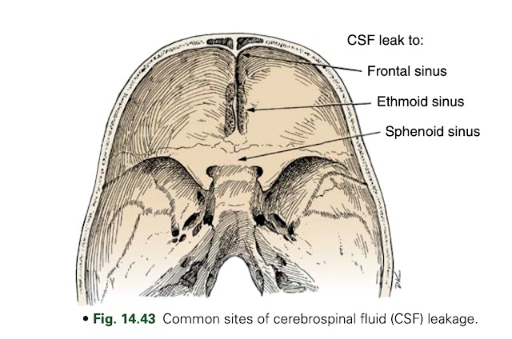
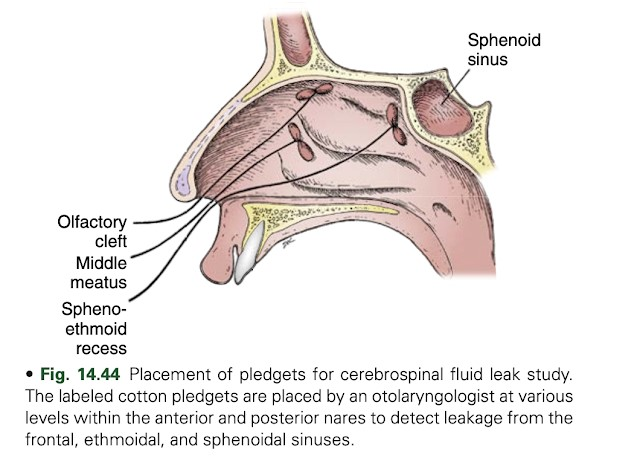
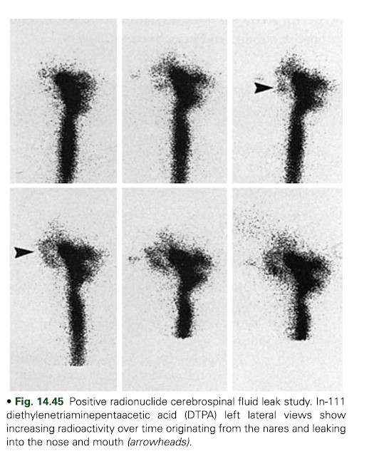

Cisternography for CSF leak detection
Author: Rutuja kote
Date: 03-12-2022
Trauma and surgery (transsphenoidal and nasal) are the most common causes of CSF rhinorrhea.
Nontraumatic causes include hydrocephalus and congenital defects.
CSF rhinorrhea may occur at any site, from the frontal sinuses to the temporal bone.
The cribriform plate is most susceptible to fracture, which can result in rhinorrhea.
Otorrhea is much less common.

Accurate localization of CSF leaks can be clinically difficult.
Radionuclide Studies
Radionuclide studies are sensitive and accurate methods of CSF leak detection.
Patient preparation
No food or drink for 6 hours before lumbar puncture. Nasal pledgets are placed and labeled as to
location (usually by ears, nose, and throat [ENT] physician). Pledgets should be weighed before
placement. If cerebrospinal fluid (CSF) samples are taken, it should be done before radiotracer
injection. The radiotracer is injected intrathecally via aseptic lumbar puncture.

Radiopharmaceutical
In-111 diethylenetriaminepentaacetic acid (DTPA; pyrogen-free for intrathecal use) 500 μCi (19 MBq) in 5
mL dextrose 10% in water: intrathecal injection with patient adjacent to imaging table using aseptic
technique. After injection, place patient in Trendelenburg position to pool the radiotracer in the basal
regions until imaging begins.
Instrumentation
Gamma camera: Large field of view; medium-energy collimator
Computer setup: 256 x 256 matrix, static images 50,000 to 100,000 or 10 min/image; zoom as needed (e.g.,
in children)
Imaging procedure
● Patient is positioned supine and image activity is tracked periodically until activity reaches the
basal cisterns (1-4 hours).
● Once radiotracer reaches basal cisterns, position patient in a position that increases CSF leakage:
● Rhinorrhea: Incline patient’s head forward and against camera face with the camera positioned in the
lateral position.
● Otorrhea: Obtain posterior images instead of lateral views.
Image Acquisition
● Acquire 5 minutes per frame for 1 hour in the selected view, and then acquire anterior, left lateral,
right lateral, and posterior views.
● Obtain 50k images every 10 minutes for 1 hour in the original view.
● Remove pledgets and place in separate tubes. Draw a 5-mL blood sample.
● Count pledgets and 0.5-mL aliquots of plasma.
● Repeat views may be indicated at 6 and 24 hours.
● Calculate the ratio of pledgets-to-plasma activity: pledget counts/pledget
● capacity divided by serum counts/0.5 Non FDG avid soft tissue thickening is noted in the bilateral
maxillary sinuses
To maximize the sensitivity of the test, nasal pledgets are placed in the anterior and posterior
portion
of each nasal region by an otolaryngologist and then removed and counted 4 hours later. A ratio of
nasal-to-plasma radioactivity greater than 2:1 or 3:1 is considered positive.
The site is most likely to be identified during a time when heavy leakage is occurring. Often, the
patient position associated with the greatest leakage is reproduced during imaging. Imaging in
the
appropriate projection is important for identifying the site of leak; lateral and anterior imaging are
used for rhinorrhea and posterior imaging for otorrhea. In cases in which no reason is known for low CSF
pressure or when a leak around the lumbar region is suspected, additional views should be made of the
lumbar region.
Scintigraphic studies show CSF leaks as an increasing accumulation of activity at the leak site.

However, counting the pledgets is more sensitive than imaging for detect- ing CSF leaks. Pledgets are
also helpful in determining the origin of the leak (anterior vs. posterior).